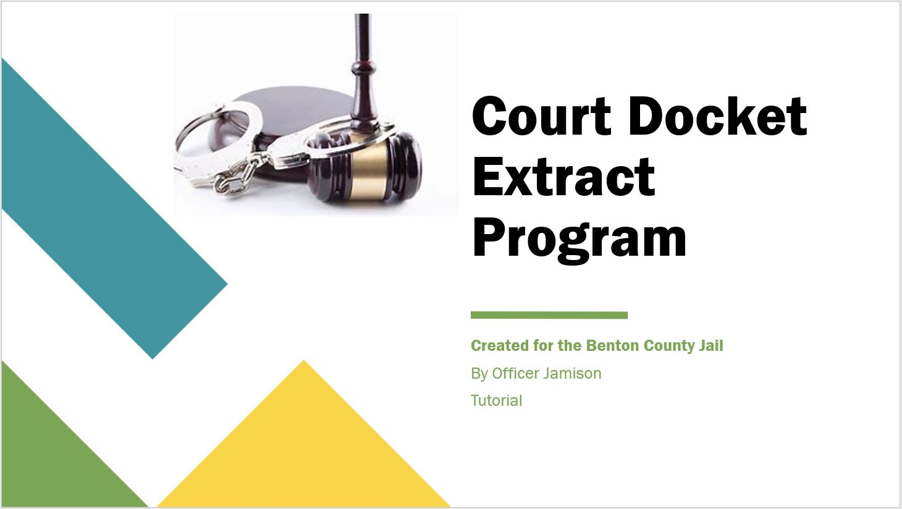
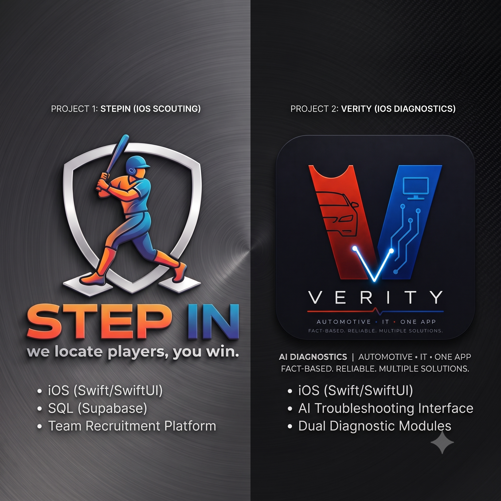
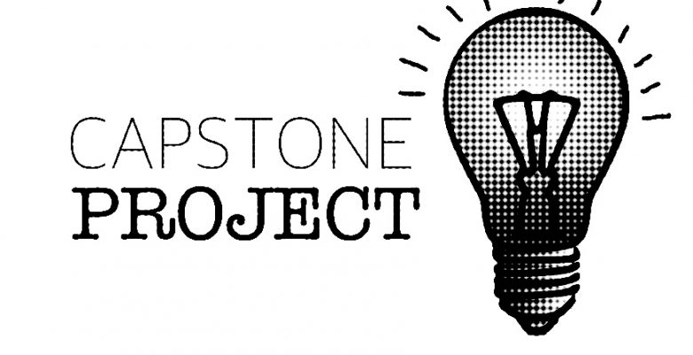
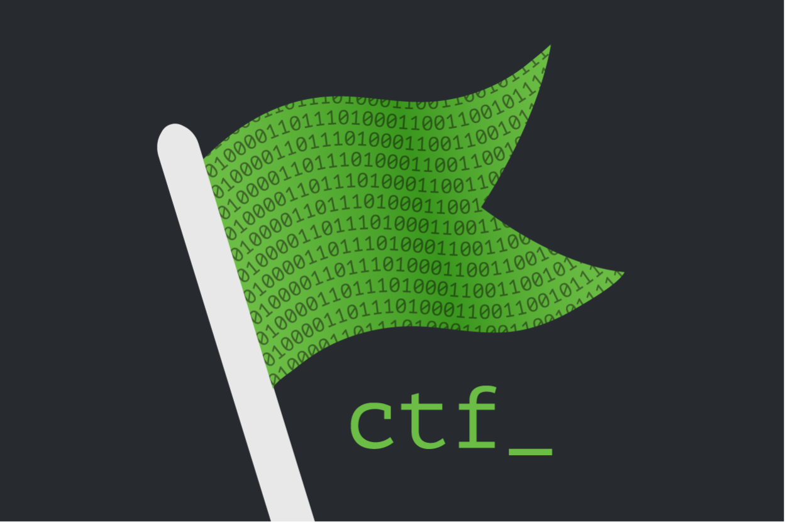
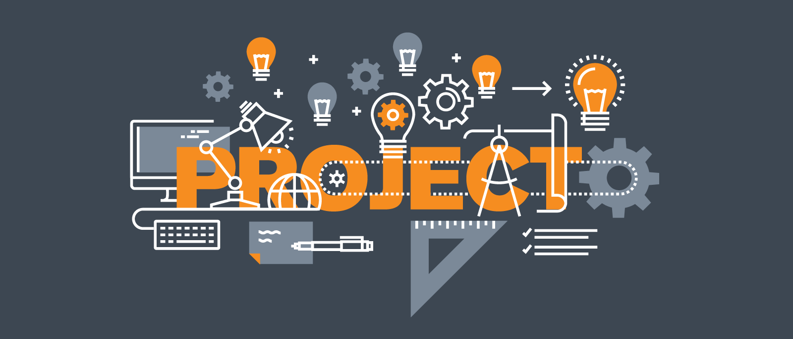

Hello, and welcome to my professional portfolio. I am Jorael Jamison, an Inventory Systems Administrator and operations professional. With a proven record of adaptability, leadership, and technical integration, I am eager to apply my diverse practical experience and academic foundation to contribute meaningfully to your team.
I hold a Bachelor of Science in Cybersecurity—earned with honors—following an Associate of Arts degree, also with honors. These academic achievements reflect my commitment to growth, discipline, and a strong work ethic—traits that continue to shape how I approach challenges and pursue opportunities.
In addition to my education, I bring over 18 years of combined experience in corrections, retail loss prevention, team management, and large-scale inventory systems administration. What sets me apart is my ability to thrive under pressure and my proactive approach to technical and operational problem-solving. I don’t just show up to do the job; I show up to contribute, protect, and elevate those around me.
Currently, as an Inventory Systems Administrator at Lampson International, I am orchestrating a large-scale digital transformation by migrating over 8,000 unique inventory records to a centralized database. I am focused on ensuring data accuracy through rigorous auditing, training, and have been selected to lead the rollout of scan-based inventory systems across multiple regional locations.
My background also includes significant operational successes. While working at the Benton County Jail, I created and implemented a streamlined court docket process that significantly enhanced daily coordination and efficiency. In loss prevention, I leveraged data to identify risk and implemented effective shrink mitigation strategies, earning recognition as the top-performing associate in the region for shrink reduction at Walmart before advancing into management.
I am confident my technical experience, combined with my long-standing history of leadership and security-focused operations, will directly support your mission. I am excited about the opportunity to bring my background, values, and commitment to a role that aligns with that vision.
Thank you for your time and consideration. I would welcome the opportunity to discuss how I can support your goals and be a valuable asset to your team.

Every night the court docket needs to be generated at the jail. This process
can be very time consuming, taking an officer upward 1 to 2 hours in order to complete.
I wrote this program as a proof of concept while obtaining my BAS degree, thinking there must
be a more efficient way to generate the docket. After much trial and error, and utilzing the help and input of
fellow officers, I was able to sucessfully achieve a working program. The python script I wrote for
this program streamlines the process, it takes in the daily jail roster and compares it
to the daily superior and district court dockets. It instantly compiles all the names of
'in custody' inmates who are on the court docket, than prints it in the preferred
format, along with thier housing assignment.
Overall, it has received very positive feedback.
The court officers especially love the program as they utilize it daily to cross-reference the docket. If the docket
was missed the night before, they are able to create the entire thing in less than 10 minutes.
Additionally, as shown in testing, this program is significantly more accurate than manually completing the docket,
as it mitigates human error of excluding a name. **UPDATE: I recently upgraded this script by turning it into a
GUI Interface application. This will further simplify the process. This GUI app has been rolled to the jail.

Beyond my professional administrative work, I am actively engaged in full-stack mobile application development, focusing on backend data management and seamless user experiences.
StepIn: I am currently developing a social networking and recruitment platform designed to connect regional sports teams and players in Washington. The application features a subscription-based model with dedicated tiers for team discovery, player resumes, and professional networking.
Verity: I am building a robust diagnostic application tailored for automotive and IT systems. This project includes a sophisticated AI troubleshooting interface, allowing users to toggle between IT and automotive diagnostic modules for efficient, data-driven problem solving.
Technical Stack: My development workflow centers on Swift and SwiftUI for iOS, with backend infrastructure powered by SQL and Supabase to ensure secure, scalable data handling and authentication.

For my capstone project in cybersecurity, I conducted an
an assessment of smartphone security vulnerabilities. The scope of
this project involved a research-based approach where I investigated
various aspects of smartphone security, including data leaks, weak passwords,
unsecure networks, and malicous applications. Additionally, this project covered
application permissions vulnerabilites, phishing methods, spam identification,
and safe browsing practices. I felt this was an important and relevant topic
with the widespread usage of mobile devices that contain a multitude of personal
and sensitive data, making them lucrative targets to be exploited.
Project managers are an integral part of any business, they take on huge responsibilites
and various roles in order to effectively plan, facilitate, and execute a project.
They are responsible for making important decisions and being a positive example to motivate
their team to success. Additionally, they are responsible for interacting with and building
quality relationships with various stakeholders. Overall, I enjoyed all the valuable concepts
and skills I learned while taking my course in project management, and below are some projects
I worked on.

Below you will find examples of my skills in successfully performing web reconnaissance
of a mock company, and ultimatly obtaining credentials to their application. This was a
series of three Capture the Flag challanges that I completed during my Ethical Hacking and
Cyber Penetration Testing Courses.

Below you will find some programming projects I worked on during my degree.

Other projects I worked on during my cybersecurity degree, including a group project.